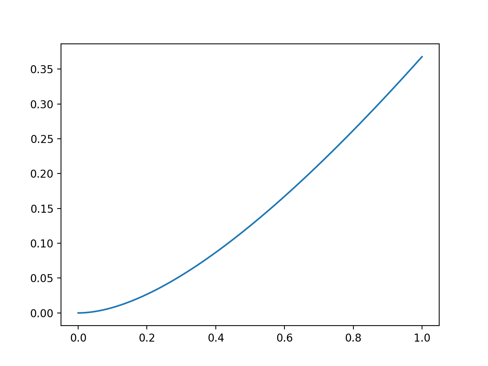

本文用于记录吴恩达deeplearning.ai系列的第二节课，涉及的内容包括调参、正则化、优化。
Week 1
Setting up ML application
it is a highly iterative process: layers, hidden unites, learning rtes, activation functions…
we need to go around this cycle many times to get the best parameters.
Train/dev/test sets
we are going to spilt the data set into three parts: training set, dev set(cross validation set), test set.
When data scale is small like 100-1000-10000, it is good enough to set 60/20/20 proportion to get these data set. But in the modern big data era, like 1,000,000 training examples, just 10,000 is enough for dev set and test set.
Because the aim for dev set is to test different algorithms on it and see which algorithm works better. 20% is too much for this set in big data scale. So at this time, maybe 98/1/1 or 99.5/0.4/0.1 or 99.5/0.25/0.25 is a better choice.
Say we are getting data of cat pictures, when our training set get the cat pictures from webpages which are in high quality. However, our dev/test sets get data from users using our app which are in bad quality. These two distribution may be different.
It is vital to set these data in the same distribution.
It might be okay to not have a test set. The goal of the test set is to give us a unbiased estimate of the perfgormance of our final network. Because dev test has already done it for us.
Bias and Variance
high bias => underfitting
high variance => overfitting
note that high bias and high variance may exist at the same time because in some parts of the classifier it is almost like linear, and in some parts it overfit the data.
Basic recipe for machine learning
High bias? => training set problem
- bigger network,
- train longer or try some more advanced optimization algorithms,
- find a new network architecture that’s better suited for this problem
High variance? => dev set problem
- get more data
- regularization
- find a new network architecture that’s better suited for this problem
there is much trade-off when we deal with depp learning high variance and high bias, cause they won’t hurt each other.
Regularization
Logistic regression
$L_2$ regularization $||w||2^2 = \displaystyle \sum{j = 1}^{n_x}w_j^2 = w^Tw$, which is also called as Weight decay
$L_1$ regulatization $\displaystyle \frac{\lambda}{2m}\sum_{i = 1}^{n_x}|w| = \frac{\lambda}{2m}||w||_1$
where $\lambda$ is called as regularization parameter, note that lambda is a reserved word in Python, so lambd is used in programming.
Neural network
$||W^{[l]}||^2 = \displaystyle \sum_{i=1}^{n^{[l-1]}}\sum_{j=1}^{n^{[l]}}(W_{ij}^{[l]})^2$
this matrix norm is called as Frobenius norm of matrix, denoted with a F
And now the gradient descent as for partial derivatives turns out to be $dW^{[l]} = (\text{from backprop}) + \displaystyle \frac{\lambda}{m}W^{[l]}$
Why regularization prevent overfitting?
L2 Regularization
When implementing regularization, it will be good to plot cost function after a certain times of iteration. So in this case it should decrease every time.
Dropout regularization
For each node, we are going to toss a coin to see whether to keep it or not. After this operation, we will get a smaller network and a simple network.
About how to implement dropout? Suppose we are in layer 3.
1 | import numpy as np |
Note that we are not tossing coins to dropout nodes. Because that will only add noise to our predictions.
Why does it work?
Intuition: can’t rely on any one feature, so have to spread out weights.
In computer vision, dropout is very regular.
One big downside for it is that the cost function get more comlicated.
Data augmentation
Adding more data is a good way to get away overfitting. But sometimes it is very hard to do so. In this case, reverse the data or rotate the picture to some angles is the solution. Or to add some distortion is also a good choice.
Early stopping
Its disadvantages are that it mix the two phases of the deep learning. One is tooptimize cost function $J$, which is to get the best $W$ and $b$. The another is avoid overfitting. Seperate these two phases is called orthogonalization.
But early stopping couple these two phases.
Setting up optimization problem
Normalizing training sets
There are two steps to do so. First is to substract $\mu = \displaystyle \frac{1}{m}\sum_{i=1}^mx^{(i)}$(the mean of data), And the second is to divide $x$ with $\sigma^2 = \displaystyle \frac{1}{m} \sum_{i=1}^m(x^{(i)})^2$.
It is very clear that the formula above turn the random distribution into a Gauss distribution.
Weight initialization for deep networks
The scale of matrix is related to the size of the input size $n$ because it depends the number of input features for one neuron. If $n$ is big, then weight matrix should be small. So it turns out it is good to multiply weight with np.sqrt(1 / n[l - 1]). As for the ReLU activation funciton, it is better to multiply with np.sqrt(2 / n[l - 1]).
The aim is to avoid the exploding or diminishing of gradient.
About why this work: As for Xavier initialization, by applying this method, the input data and the output data will follow the approximate same distribution. But it work well for tanh funciton but not ReLU activation function.
Then 何恺明 find that multiply it by 2 will get a pretty good result. Then it is called He initialization.
Check derivative computation
for each i:
$d\Theta_{\text{approx}}[i] = \displaystyle \frac{J(\theta_1, \theta_2, …, \theta_i + \epsilon, …) - J(\theta_1, \theta_2, …, \theta_i - \epsilon, …)}{2\epsilon}$
check $\displaystyle \frac{||d\Theta_{\text{approx}} - d\theta||2}{||d\Theta{\text{approx}}||_2 + ||d\theta||_2}$
it suggested to take $\epsilon$ as $10^{-7}$, if the result of that fraction is about $10^{-7}$, then it is good!
some tips:
- Don’t use in training - only to debug.
- If algorihtm fails grad check, look at components to try to identify bug.
- Remember regularization.
- Doesn’t work with dropout.
- Run at random initialization; perhaps again after some training.
Homework
- if we use ReLU function as the activat function, then the zero initialization will make the output as zero permanently.
Week 2
introduce some optimization algorithms
Mini-batch gradient descent
the main framework of this algorithm:
1 | for mini_batch in mini_batches: |
the procedure is called “1 epoch”, which means that we go through the entire data set one time.
cost figure
During the batch gradient descent, we expect the cost function decreases in every iteration, however, in the mini-batch gradient descent, it is not necessary.
That is because different mini-batch have different features, thus result in the oscillations.
intuition
if we set the size of mini-batch to $m$, then it is Batch gradient descent which has no noise. if we set the size of mini-batch to 1, then it is Stochastic gradnet descent which has very high noise.
from what is discussed above, we can learn that mini-batch lay somewhere between these two extreme instance.
how to choose mini-batch size
if the size of data set is small, then it is better to use batch gradient descent.
then if it is necessary to choose some size for mini-batch, $2^6, 2^7, 2^8, 2^9$ is the common choice. Notice that we should make sure that memory is able to handle this mini-batch, that is to say, it could get entire mini-batch into the memory.
Exponentially weighted averages
if the data we get is somewhat noisy, then it is good to use this method to reduce the noice. The reason why it works is that for every data point in set, it updates this point according to the data before it and the value it has. Formula:
$$
V_t = \beta V_{t - 1} + (1-\beta)\theta_t
$$
it is a very good way to reduce the use of memory and space in algorithm to get the averages and to reduce the noise of data set.

From the figure above we can know that the influence of $\displaystyle \frac{1}{1 - \beta}$ day have the proportion of that. The code
1 | import numpy as np |
So I still don’t know why Andrew said that we can consider the formula only get the influence of last $\displaystyle \frac{1}{1 - \beta}$ days.
tutuition
the figure above plot the influence of every original data exert on the current data. Andrew said it is ture that the largest of $\displaystyle \beta^\frac{1}{1 - \beta}$ is 0.35, however, this value is approximate the same value of 1/e, so it is called exponentially weighted averages.
$$
(1-\epsilon)^{1/\epsilon} = 1/e
$$
bias correction
it is very clear that at the beginning of this curve, the updated data is not right because we still don’t have the data from past certain days.
based on the formula before, we modify it by
$$
\displaystyle \frac{V_t}{1 - \beta^t}
$$
Gradient descent with momentum
the basic idea is to compute an exponentially weighted average of gradient to update parameters.
this algorithm take the shape of contour graph into consideration, making sure that it moves formly both on vertical and horizontal direction.
compared to the examples before, where we get a very noisy temperature data set and after applying the exponentially weighted averages and get a smooth figure, now we want the gradient to be smooth so it will be much easier to get to the optimization point. Formula:
$$
V_{dW} = \beta V_{dW} + (1-\beta)dW \\
V_{db} = \beta V_{db} + (1-\beta)db \\
—\\
W = W - \alpha V_{dW} \\
b = b - \alpha V_{db}
$$
we are going to update $W, b$ based on them.
The most common data for $\beta$ is 0.9. And there’s no need to bother with the bias correction because the loss of beginning step is not a big deal.
RMSprop
stands for root mean square prop
Formula:
$$
S_{dW} = \beta S_{dW} + (1-\beta)dW^2 \\
S_{db} = \beta S_{db} + (1-\beta)db^2 \\
—\\
W = W - \alpha \frac{dW}{\sqrt{S_{dW}}} \\
b = b - \alpha \frac{db}{\sqrt{S_{db}}}
$$
the reason why it works is that the division operation. If some parameters have the huge twists, then it will get bigger $S$ value, inturn get smaller update value.
Adam
And it is common to set
$$
\beta_1 = 0.9 \\
\beta_2 = 0.999 \\
\epsilon = 10^{-8}
$$
Learning rate decay
$$
\alpha = \frac{1}{1 + \text{decay_rate} \text{epoch_num}} \alpha_0
$$